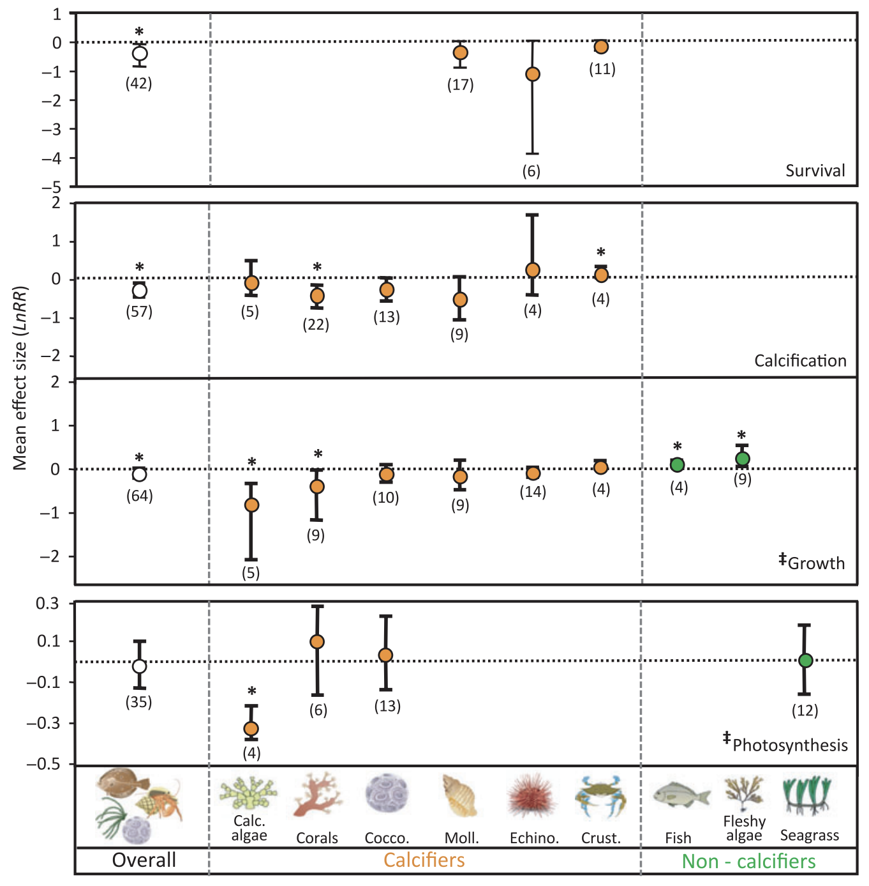
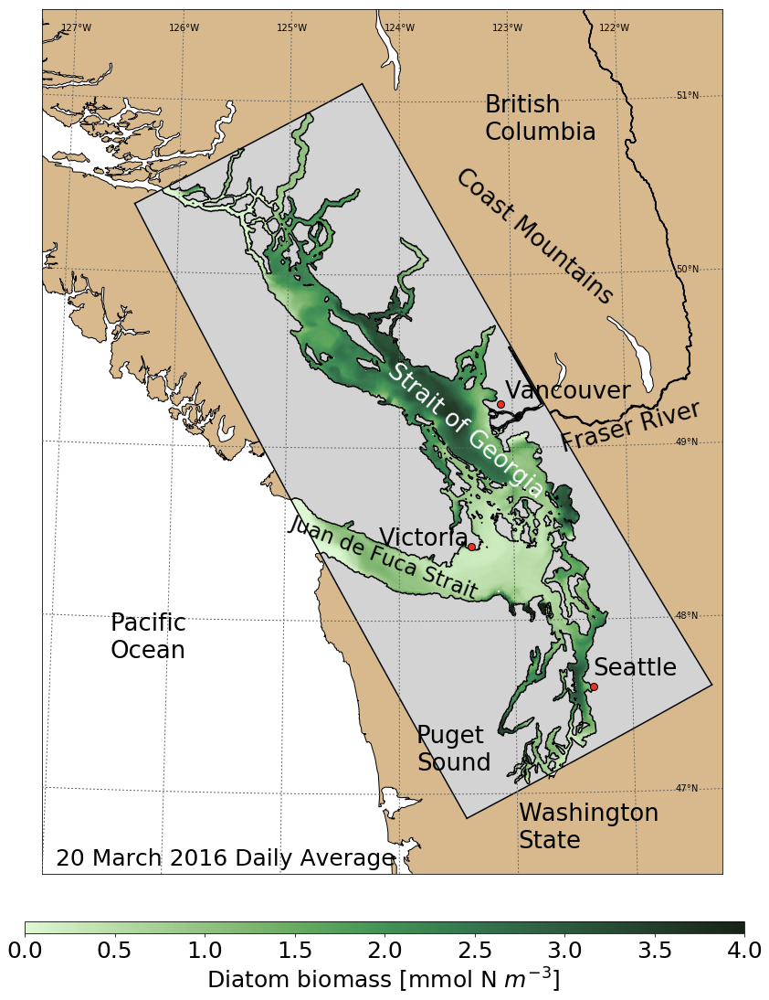
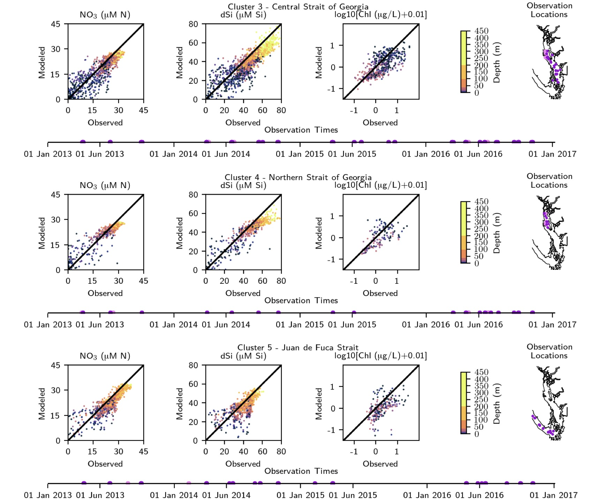

class: center, middle .title[A submesoscale modelling approach to understanding the past, present and future carbonate chemistry of the Salish Sea] <!-- .subtitle[] --> .author[Tereza Jarníková] .institution[University of British Columbia, Vancouver, British Columbia] .date[UBC Physical Oceanography Seminar, June 16, 2022] <br/> <img style="width:46%" src="./figures/glodapparspace.png"> <br/> .note[We live and work on [{unceded land}](https://native-land.ca/maps/territories/puget-sound-salish/)] --- name: toc class: left #Table of Contents 1. [The Ocean in the Global Carbon Cycle](#cycle) 1. [The Anthropogenic Carbon Increase](#increase) 1. [Ocean Acidification: The Other CO$_2$ problem](#oaoa) 1. [Tools for Studying the Problem](#tools) 1. [Learning from a Biophysical Model](#cluster) 1. [Constructing a Carbonate Chemistry Model](#modbuild) 1. [The Anthropogenic Carbon Increase](#increase) 1. [Our Local Carbon Budget and Beyond](#budget) 1. [Thank you!](#ack) <!-- Comment out the next slide if you don't want the Table of Contents link --> --- layout: true .toc[[✧](#toc)] --- name: cycle class: center ##The Ocean in the Global Carbon Cycle <br/> .note[[{Friedlingstein et al., 2022}](https://essd.copernicus.org/articles/14/1917/2022/essd-14-1917-2022-discussion.html)] <br/> -- <br/> The ocean is Earth's largest active reservoir of carbon. -- The ocean's inorganic carbon content is set by interacting physical, chemical, and biological processes. -- To understand how the ocean's carbon content is changing, we must first understand the contributions of these processes to the dynamic balance of the system. --- name: intro class: center ##The Anthropogenic Carbon Increase <br/> .note[[{NOAA Global Monitoring Laboratory}](https://gml.noaa.gov/ccgg/trends/)] <br/> -- Primarily due to the burning of fossil fuels, the atmospheric concentration of carbon dioxide has increased from 280 $\mu$atm to over 400 $\mu$atm since the industrial revolution. -- The ocean has absorbed 20-30%$^1$ of the anthropogenic emissions of CO$_2$ to date. .note[1 [{IPCC Summary for Policymakers, 2019}](https://www.ipcc.ch/srocc/chapter/summary-for-policymakers/)] -- Here, I try to understand a small part of what has happened next, focusing on one dynamic coastal region - the Salish Sea. --- name: oaoa class: center ##Ocean Acidification: The Other CO$_2$ problem <br/> .note[[{Wolf-Gladrow et al., 2007}](https://www.sciencedirect.com/science/article/pii/S0304420307000047)] -- Increasing CO$_2$ in the surface ocean due to uptake from atmosphere shifts the speciation kinetics of inorganic carbon in seawater: -- <div> CO$_{2(atmos)}$ $\rightleftharpoons$ CO$_{2(aq)}$ $\rightleftharpoons$ H$_{2}$CO$_{3}$ $\rightleftharpoons$ H$^{+}$ + HCO$_{3}^{-}$ $\rightleftharpoons$ 2H$^{+}$ + CO$_{3}^{2-}$ </div> -- <br/> <div> CO$_{2(aq)}$ $\uparrow$ means H$^{+}$ $\uparrow$, pH $\downarrow$, (CO$_{3}^{2-}$) $\downarrow$ </div> -- This shift has been called ocean acidification$^1$. <br/> .note[1 [{Caldeira and Wickett, 2003}](https://www.nature.com/articles/425365a)] --- name: oaoa class: center ##Ocean Acidification: The Other CO$_2$ problem <br/> .note[[{Wolf-Gladrow et al., 2007}](https://www.sciencedirect.com/science/article/pii/S0304420307000047)] -- A decrease in CO$_{3}^{2-}$ lowers the saturation state ($\Omega$) of CaCO$_3$ minerals, required for the growth of calcifying organisms: -- <div> $\Omega = \frac{[Ca^{2+}][CO_{3}^{2-}]}{K'_{sp}}$ </div> -- Below $\Omega$ = 1, dissolution of CaCO$_3$ is thermodynamically favoured. --- name: oaoa class: center ##Ocean Acidification: The Other CO$_2$ problem  <br/> .note[[{Kroeker et al., 2010}](https://onlinelibrary.wiley.com/doi/full/10.1111/j.1461-0248.2010.01518.x)] -- Ocean acidification has negative, though variable, effects on many taxa of marine organisms, and is expected to shift marine ecosystem dynamics. --- name: tools class: center ##Tools for Studying the Problem -- <br/> In-situ measurements of inorganic carbon concentration remain patchy in space and time. --- name: tools2 class: center ##Tools for Studying the Problem <br/> .note[PlankTOM12, tuning run] -- -- <br/> <br/> Global carbon models are crucial tools for understanding the biological, chemical and physical processes driving global-scale carbon cycling, filling in gaps left by observations. --- name: tools2 class: center ##Tools for Studying the Problem -- <br/> <br/> However, these models cannot resolve dynamics in coastal regions, which are disproportionately productive$^{1}$ and experience significantly more variable carbonate chemistry conditions$^{2}$ than the open ocean. <br/> .note[1 [{Longhurst, 1995}](https://www.sciencedirect.com/science/article/pii/0079661195000151)] <br/> .note[2 [{Duarte et al., 2013}](https://link.springer.com/article/10.1007/s12237-013-9594-3)] --- name: tools2 class: center ##Tools for Studying the Problem --  -- Thus, high-resolution regional ocean models are uniquely poised to give insights into carbon cycling dynamics at the crucial coastal scale! -- In my doctoral work, I developed a submesoscale carbonate chemistry model for the Salish Sea and used it to understand the changing inorganic carbon balance of this coastal ocean. -- Furthermore, our high-resolution model may be able to help us derive insights into the carbonate chemistry dynamics of coastal regions that do not have the benefit of high-resolution models. --- name: tools class: center ##Chapter 2 How do physical oceanographic dynamics drive phytoplankton community dynamics in the Salish Sea, and what are the dominant spatial patterns of both? <br/> <br/> .note[[{Sverdrup, 1953}](http://www.soest.hawaii.edu/oceanography/courses/OCN626/2010/sverdrup.pdf)] <br/> .note[[{Behrenfeld et al., 2010}](https://pubmed.ncbi.nlm.nih.gov/20462113/#:~:text=The%20Critical%20Depth%20Hypothesis%20formalized,where%20phytoplankton%20growth%20exceeds%20losses.)] --- name: tools class: center ### What can a high-resolution (submesoscale) <br/> biophysical model tell us? .left-column[ .note[[{Soontiens et al., 2016}](https://tandfonline.com/doi/full/10.1080/07055900.2015.1108899)] <br/> .note[[{Soontiens and Allen, 2017}](https://www.sciencedirect.com/science/article/pii/S1463500317300240)] ] -- .right-column[• NEMO 3.6 framework <br/><br/> Biophysical hindcast model run operationally since 2014 <br/><br/> • Horizontal grid spacing: ~ 500 m <br/><br/> • Vertical grid spacing: 1 m (near surface) to 27 m <br/><br/> • Tides: 8 tidal constituents at open boundaries <br/><br/> • Freshwater: 150 rivers (over monthly climatology except Fraser River daily) <br/><br/> • Winds / Meteorology: 2.5 km & hourly from Environment Canada] --- name: tools class: center ### What can a high-resolution (submesoscale) <br/> biophysical model tell us? .left-column[<br/><br/> .note[[{Olson et al., 2020}](https://https://agupubs.onlinelibrary.wiley.com/doi/full/10.1029/2019JC015766)] ] -- .right-column[<br/><br/>Biological model component (NPDZ):<br/><br/> • Nutrients (nitrate, silica, ammonium)<br/><br/> • 3 primary producer classes: <br/>diatom-like, flagellate-like, <br/>*M. rubrum* <br/><br/> • Detritus<br/><br/> • Two zooplankton classes] --- name: tools class: center ### What can a high-resolution (submesoscale) <br/> biophysical model tell us? .left-column[ ] -- .right-column[### There is a lot of data here! Current biophysical models are detailed, but complex. <br/> Here, one year of a single modelled variable at hourly resolution is 60GB of data (~$3*10^{10}$ individual values).<br/> Can we retrieve critical signals from large datasets and draw conclusions from them?<br/> This is a great problem for the machines!<br/> ] --- name: tools class: center ### Our approach <br/> -- We extract model-available proxies for several factors related to stratification and mixing, as well as for primary productivity. -- We then use an unsupervised machine learning method to cluster these extracted signals and look for emergent patterns. --- name: tools class: center ### Our approach Signals for one station: -- --- name: tools class: center ### Clustering Via Ward's Euclidean Distance Method -- --- name: tools class: center ### Selected results .left-column[] .right-column[] -- <br/><br/><br/><br/><br/><br/><br/><br/><br/><br/><br/><br/><br/><br/><br/><br/> -- As expected, the dominant Fraser River drives spatial patterns of stratification in the Salish Sea. -- Spatial patterns in freshwater index and halocline dynamics are robust over the four studied years. --- name: tools class: center ### Selected results .left-column[] .right-column[] -- <br/><br/><br/><br/><br/><br/><br/><br/><br/><br/><br/><br/><br/><br/><br/><br/> -- However, spatial patterns in halocline dynamics also coincide with patterns in phytoplankton biomass! -- Summer persistence of opportunist-type phytoplankton in the northern Strait of Georgia may be explained by stronger mixing due to lower freshwater input. --- name: tools class: center ### Selected results The three main biological regions of the Salish Sea have comparable total biomass, but show meaningful differences in functional group dynamics. Less stratified regions support stronger persistence of opportunist-type functional groups. .left-column[] .right-column[] --- name: cluster class: center ### Selected results The three main biological regions are represented equally well in the model, giving us confidence in the results.  --- name: tools class: center ## Summary 1. Different regions of the Strait of Georgia have distinct, spatially cohesive biological signatures that coincide with changes in physical regimes. 2. Summer persistence of opportunist-type phytoplankton in the northern Strait of Georgia may be explained by stronger mixing due to lower freshwater input. 4. Unsupervised machine learning methods provide simple, powerful techniques for finding structure in large datasets and determining boundaries of biophysical provinces. This work is accepted for publication, available as a [{preprint}](https://os.copernicus.org/preprints/os-2021-66/) at Ocean Science. --- name: tools class: center ##Chapter 3 How has anthropogenic carbon from the air-sea and open-ocean boundary changed the inorganic carbon mass-balance and $\Omega_{arag}$ state in the Salish Sea?<br/><br/> How do the carbonate chemistry conditions of the Salish Sea compare with available measurements in the rest of the global coastal ocean, and what are the implications of these conditions on $\Omega_{arag}$ globally? <br/><br/><br/> <br/> --- name: modbuild class: center ##Constructing a Carbonate Chemistry Model .left-column[] .right-column[Model Equations:$^{1}$ <div>$$\frac{\partial DIC}{\partial t} = - (U_{N} - Rm_{N})R_{C:N} -U_{PC} $$</div> <div>$$+\textit{transport}+\textit{air-sea flux} $$</div> <div>$$\frac{\partial TA}{\partial t} = (R_{P:N}+1)U_{NO_{3}^{-}}$$</div> <div>$$+(R_{P:N}-1)(U_{NH_{4}}-Rm_{NH_{4}})$$</div> <div>$$–2Rm_{NO_{3}^{-}}+\textit{transport}$$</div> .note[1.[ {Moore-Maley et al., 2016}](https://os.copernicus.org/preprints/os-2021-66/)] Air-sea CO$_2$ transfer and seawater pCO$_2$ from DIC, TA resolved using mocsy 2.0$^{2}$ <br/> .note[2.[ {Orr et al., 2015}](https://bg.copernicus.org/articles/12/1483/2015/)] ] --- name: tools class: center ##Model Evaluation Our model represents DIC, TA, and $\Omega_{arag}$ in the Salish Sea with high fidelity accross different regions and depths. --- name: tools class: center ##Model Evaluation <img style="width:60%" src="./figures/modeval_met.png"> Our model represents DIC, TA, and $\Omega_{arag}$ in the Salish Sea with high fidelity accross different regions and depths. --- name: tools class: center ##A tool for regional research and local stakeholders We can reconstruct environmental conditions at shellfish aquaculture sites and examine their relationship to stress and mortality events$^{1}$. .note[1.Morin et al., in preparation] --- name: tools class: center ##Experimental Design <br/> <img style="width:100%" src="./figures/expdes.png"> --- name: tools class: center ##Setting the Atmospheric Boundary Condition <br/><br/> The model seasonal atmospheric CO$_2$ cycle is initialized with averaged observations from La Jolla and Pt. Barrow <br/><br/> -- In the preindustrial simulation, the mean atmospheric CO$_2$ is 280$\mu$atm, and the seasonal cycle is unchanged. --- name: tools class: center ##Setting the Lateral Boundary Condition <br/><br/> <img style="width:80%" src="./figures/ageviso.png"> -- To estimate the anthropogenic intrusion, we need to know the age of the water, which we estimate from local cfc-freon-11 observations <br/><br/> -- We can then calculate the DIC intrusion using the [{Gruber et al., 1996}](https://agupubs.onlinelibrary.wiley.com/doi/10.1029/96GB01608) method. --- name: increase class: center ##Results: The Anthropogenic Carbon Increase <img style="width:80%" src="./figures/extradic.png"> -- On average, DIC has increased by 29-39 mmol m$^{-3}$ in the Salish Sea, a modest increase in a global context. --- name: tools class: center ##Results: The Effects on $\Omega_{arag}$ <img style="width:80%" src="./figures/arag.png"> -- <br/><br/> However, the effects of this increase are dramatic: since the pre-industrial era, the Salish Sea has shifted to majority aragonite undersaturation by volume in all seasons. --- name: tools class: center ##Results: The Effects on $\Omega_{arag}$ <br/><br/> <img style="width:80%" src="./figures/aragdp.png"> -- Modern aragonite saturation conditions (shown in colour), though variable, are typically outside of the range of pre-industrial values (shown in gray) throughout the domain. --- name: tools class: center ##Why are the effects on $\Omega_{arag}$ so dramatic? <br/><br/> <img style="width:90%" src="./figures/FIG_CG_07_theory.jpeg"> -- <br/><br/><br/><br/> Both the pre-industrial and the present-day Salish Sea occupy the poorly-buffered, low aragonite portion of the TA vs. DIC space, and the center of the distribution shifts to below the $\Omega_{arag}$ = 1 line from the pre-industrial to the present-day case. --- name: tools class: center ###Carbonate Chemistry in the Global Coastal Ocean <img style="width:50%" src="./figures/glodap.jpeg"> Carbonate chemistry conditions similar to those in the Salish Sea are common throughout the Pacific Rim. --- name: tools class: center ## Summary 1. On average, DIC has increased by 29-39 mmol m$^{-3}$ in the Salish Sea, causing a shift to majority aragonite undersaturation by volume. 2. Modern aragonite saturation conditions, though variable, are typically outside of the range of pre-industrial values throughout the domain. 3. Much of the coastal Pacific rim has similar carbonate chemistry conditions, and comparable shifts in aragonite saturation may have occurred. This work is accepted for publication at Global Biogeochemical Cycles. --- name: budget class: center ##Chapter 4 (some highlights) What are the dominant fluxes in the Salish Sea carbonate chemistry balance, and what is their relative magnitude and spatial and temporal structure?<br/><br/> What is the spatial structure of surface air-sea CO$_2$ flux in the Salish Sea?<br/><br/> How may the Salish Sea carbonate chemistry balance respond to a likely future increase in anthropogenic CO$_2$? <br/><br/> <br/> --- name: tools class: center ###A carbonate chemistry budget for the Salish Sea <br/> -- In the Absolute DIC budget, which considers absolute movement of matter through the system, the fluxes of inorganic carbon through the system are dominated by movement through the Juan de Fuca lateral boundary. --- name: tools class: center ###A carbonate chemistry budget for the Salish Sea <br/> -- In the $\Delta$DIC budget view, which considers how much each flux changes the DIC content in the system, the Juan de Fuca lateral boundary remains a key source but is a less important sink, and other fluxes become more important. --- name: tools class: center ###A closer look at the Juan de Fuca fluxes <br/> -- In the summer months, the incoming Juan de Fuca water is characterized by a strong, interannually consistent inflow of carbon-rich water at depth. -- Winter inflows and outflows are much less interannually consistent and merit further investigation. --- name: tools2 class: center ###Air-sea CO$_2$ flux <br/> -- We consider tendencies in surface pCO$_2$ and air-sea CO$_2$ flux in the context of the biophysical regions we found in Chapter 2. <br/> <br/> --- name: tools2 class: center ###Air-sea CO$_2$ flux <br/> -- Strong surface stratification drives low pCO$_2$ conditions in the Strait of Georgia, while in the Juan de Fuca Strait, tidal mixing of deep, carbon-rich waters leads to supersaturation - even in summer. <br/> <br/> --- name: tools2 class: center ###Air-sea CO$_2$ flux <br/> Most of the Strait of Georgia is neither a strong source nor a strong sink of atmospheric carbon. The Juan de Fuca Strait is a clear modest source. <br/> <br/> --- name: tools2 class: center ###A projected near-future carbon increase I estimate the future DIC intrusion by year 2050, using SSP 2-4.5, a conservative (low) emissions scenario. <br/> <br/> -- <img style="width:40%" src="./figures/extradic_ssp.png"><br/> -- Remarkably, the projected increase over the next thirty years represents approximately 80$\%$ of the total inorganic carbon increase from the pre-industrial period to year 2015! --- name: tools2 class: center ###A projected near-future carbon increase <br/> -- Further measurable decreases in $\Omega_{arag}$ are visible under this scenario. <br/> <br/> --- name: tools2 class: center ## Summary 1. The Salish Sea carbonate chemistry balance is largely set by the incoming water through the Juan de Fuca boundary at depth. 2. The carbon delivery by water is interannually consistent in summer but varies in winter. 3. Under a conservative, low-emissions scenario, the anthropogenic DIC increase in the Salish Sea in the next 30 years is ~80% of the total anthropogenic increase from the beginning of the industrial era. --- class: middle, center # Thank you <br/> Thank you, very much, to Dr. S. E. Allen, Dr. D. Ianson, everyone who has been a part of MOAD and the Ianson group, UBC colleagues and friends.$^{1}$ Thank you to MEOPAR, the UBC Four-Year Fellowship, and NSERC for funding. .note[1 and to the people on [{stackoverflow}](https://stackoverflow.com/) and other useful/constructive parts of the Internet] .note[Presentation created with [{Liminal}](https://github.com/jonathanlilly/liminal), by Dr. JM Lilly. Thanks to Dr. Lilly, Dr. A. MacPherson, and [@skvrnami](https://github.com/jonathanlilly/liminal) for kind advice] <br/>